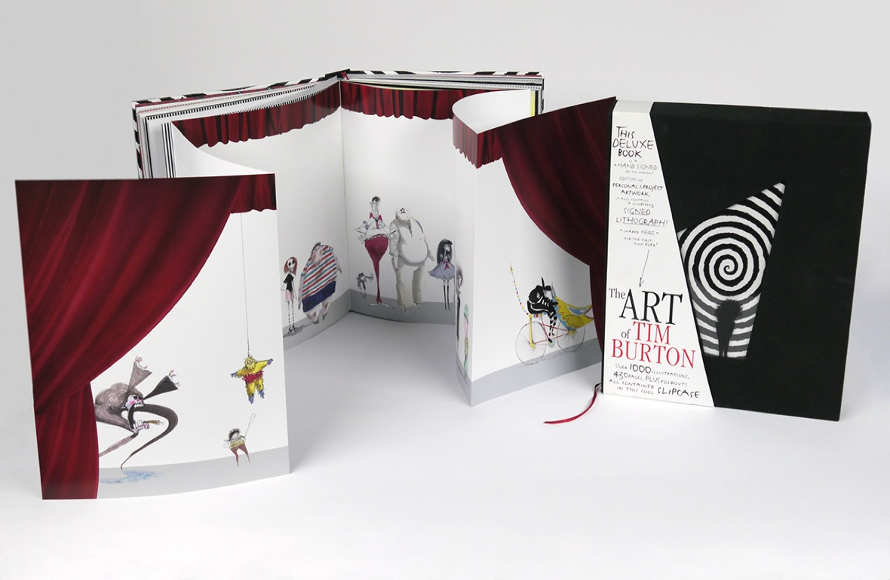

- The ART of TIM BURTON
- The Art of Tim Burton is the definitive compilation of forty years of Tim Burton's artistry, including film concepts and hundreds of illustrations from his personal archives, edited under the creative guidance of Burton himself. This comprehensive 434 page book is grouped into thirteen chapters that examine common themes in Burton's work, from his fascination with clowns to his passion for misunderstood monsters, to his delight in the oddities of people. Many of Burton's friends and collaborators offer their thoughts, insights and anecdotes about Tim Burton's style and artistic approach to life. Artwork from the following films and projects are included in this book: Alice in Wonderland (2010), Sweeney Todd: The Demon Barber of Fleet Street (2007), Charlie and the Chocolate Factory and Corpse Bride (both 2005), Big Fish (2003), Planet of the Apes (2001), Sleepy Hollow, (1999), Mars Attacks! (1996), Ed Wood (1994), The Nightmare Before Christmas (1993), Batman Returns (1992), Edward Scissorhands (1990), Family Dog (1987), Batman (1989), Beetlejuice (1988), Pee-Wee's Big Adventure (1985), Frankenweenie (1984), Vincent (1982), and Hansel & Gretel (1982). The book also contains additional drawings from his illustrated book of poetry The Melancholy Death of Oyster Boy & Other Stories (1997), and from The World of Stainboy web shorts (2000).